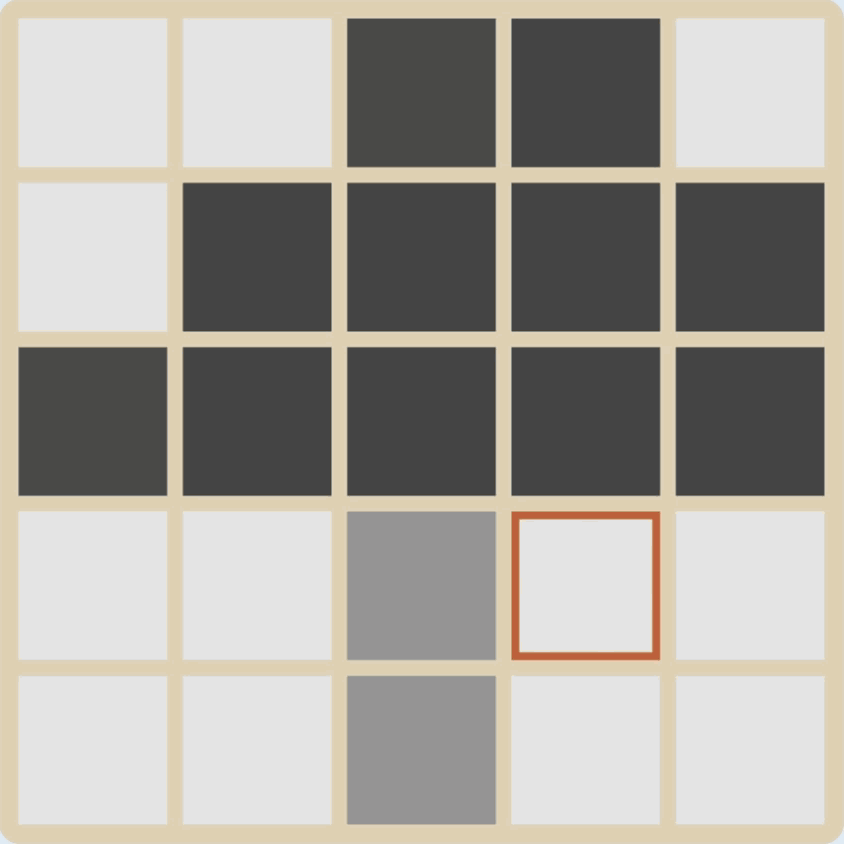
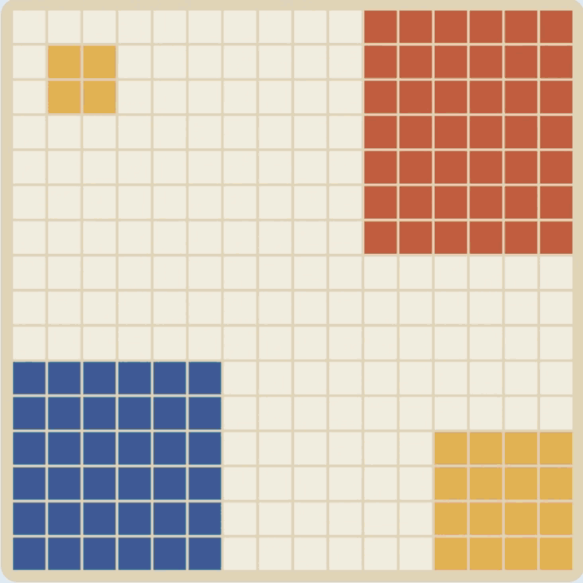
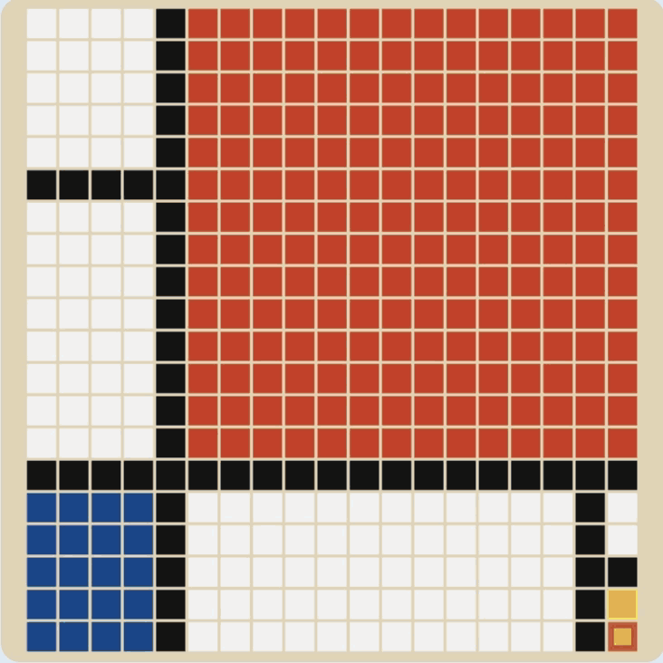
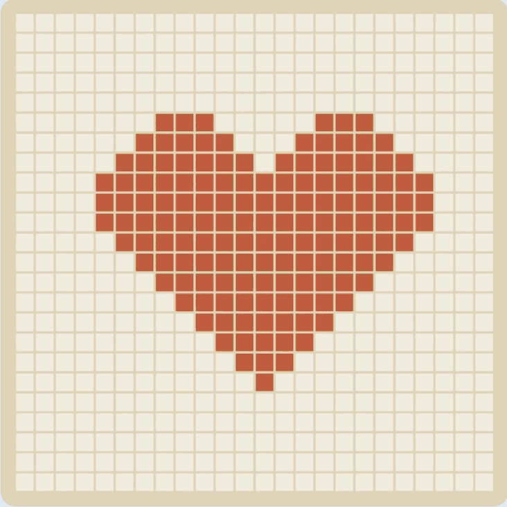
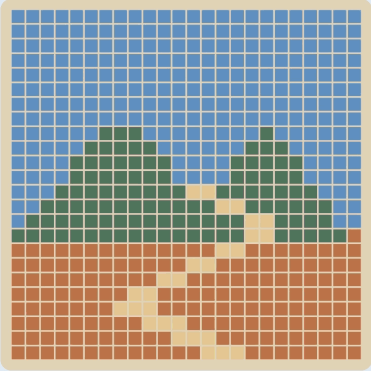
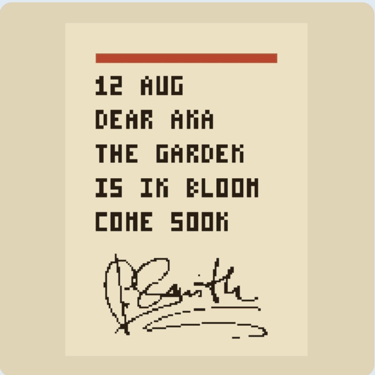
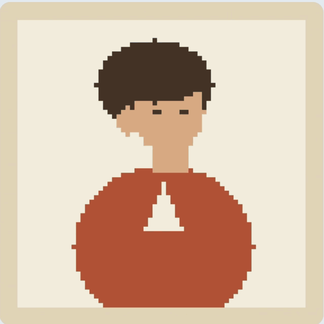
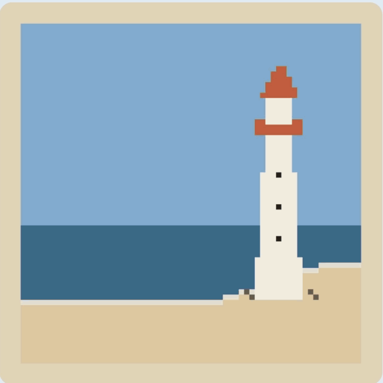
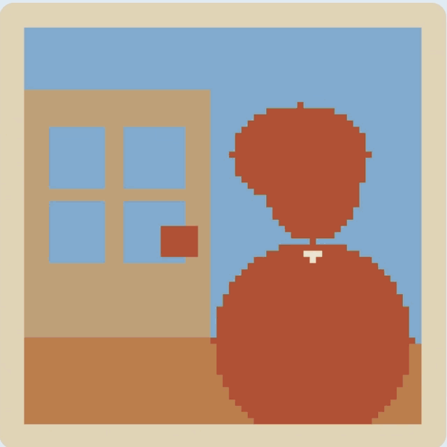

点选像素
在操作图里点一格。从第 3 关起，灰度轴上会亮起一个标记，指出这个像素的灰度位置。
一个关于修复照片的解谜游戏：你开一间小小的灰度修理铺，送来的每张照片都被抽掉了颜色。你只有四种操作——点像素、拖滑块、拖阈值、拖色块——靠它们一点点把照片修回来。十三关，从认识灰度到把所有东西一起用上。
特别的地方在于：全游戏没有一句教学文字。规则藏在关卡设计里，玩家靠玩把它们摸出来。


灵感
上学期我修了数字图像处理。平时拍照、剪片子，影调、曝光、灰度值这些概念本来就熟，课听起来很轻松。但不少同学——包括我一个朋友——公式背得出来，却说不出那些数字在一张真实的图里到底指的是什么。这些其实一点都不抽象：把一张图一直放大，它就是一格一格的小方块， 而灰度值就是每一格有多亮或多暗.
问题大概不在知识本身，而在碰到它的方式：这些概念永远只以公式和讲义出现，没有机会亲手摆弄、直接看到结果。所以我把最基础的三个——灰度值、阈值、灰度映射——做成了游戏，让玩家一关一关玩出理解。
这个游戏做给两类人：完全没接触过这门课的人，和正在修课、但还没把这些概念真正建立起来的学生。
概览
灰度修理铺是一款在浏览器里运行的游戏，共 13 关。 通关判定分两个阶段：第 1–9 关的左图就是答案，判定方式是两图逐像素比对——通过则边框闪绿进入下一关，失败闪红。第 9 关是第 8 关的变体：答案仍在左边，但不能靠逐像素照抄做出来。第 10 关起，左图不再是答案，它显示需要处理的原图和一句提示（比如“一张褪色的旧照片。”），要修成什么样由玩家自己推断，修好的图只在判定通过后才出现在左边。
除了通关后的一句短注和那行提示，任何一关都没有教学文字。 每关只引入它用得上的操作，规则靠玩出来。
四种操作
在操作图里点一格。从第 3 关起，灰度轴上会亮起一个标记，指出这个像素的灰度位置。

改变选中像素的灰度值。从黑到白一格一格走，来回拖，深浅跟着变。

拖动轴上的分界线，决定从哪里切开、每一段落在哪一侧。手柄可以拖出两端，把一段灰度并进相邻的一段。

把颜色放进映射条的某一段，落在这一段灰度里的像素会同时变成那个颜色。
界面说明
第 1–9 关：这是答案，把右图和它逐像素对上。第 10–13 关：这里只剩一句提示。
从黑到白，每一级灰度占一格。选中像素后，轴上会标出它的位置；拖滑块调深浅。
和灰度轴上下对齐。给某一段放上颜色，落在这段灰度里的像素就都显示成那个颜色。
左图的灰度版本，也是主要的操作区。点一个像素选中它，改动实时显示在这里。
那条竖线和它底部的圆手柄。拖动分界线重划灰度区间，每一段随后各取一种颜色。
可选的颜色。把色块拖进映射条，就把它指派给某一段灰度。
关卡设计
游戏是从一关开始的：后来成了第 8 关的那一关。第一版原型就是这一关，周围围满了说明：直方图、对照表、每个部分都配了文字注解。我一个正在修这门课、但还没把概念建立起来的朋友试玩，直接看懵了。多出来的文字没让任何东西更好学，反而让他在还没弄明白屏幕要他做什么之前，就先多了一堆要猜的东西。
于是我定下一条标准： 每一关都必须让完全新手只靠自己玩就能通关.
标准定下来之后，方向反了过来：不再一关一关往前做，而是从脑子里已经想清楚的那关——第 8 关——往回推。 玩家在这一关之前需要什么？ 每缺一个概念，就单独做一关。
推导过程 · 第 01–13 关

起因 一位朋友试玩第 8 关原型，看不懂屏幕
玩家在第 8 关之前
需要什么？


从认识灰度到自己全部上手，
第 8 关集齐了所有前置概念


逐关详解
每关最多引入一个新操作或新概念。下面按组说清三件事：教什么、为什么这么设计、试玩之后改了什么。
玩法
拖滑块改变右侧方块的灰度；松手时比对两边，和左图一致即通关。
设计思路
这一关来自那位朋友的困惑。我最初想做的是后来的第 8 关：一张图、几个阈值、一整套自由颜色，旁边还配着文字说明，结果他看不懂屏幕。那次试玩定下了一条标准： 完全新手只靠自己玩就得能通关.
第 1 关是从这条标准往回走的第一步：用最简单的图让人看见灰度是什么。整张图只有一个像素，唯一能做的是拖滑块，右边方块的深浅跟着手柄走。

玩法
点一个像素，滑块跳到它的灰度；把不对的逐个改回来即可通关。
设计思路
把上一关的单个像素长成一张 5×5 的图；要教的是：图是由像素组成的。


玩法
第 3 关：把每个色块拖到轴上预先分好的那一段；落在这一段里的像素都会变成该颜色，所有段都对上即通关。
第 4 关：画面变成一幅蒙德里安。目标图里有两个黄色像素在灰度视图中看不见，得把它们找回来。
设计思路
第 3 关 故意把阈值固定住。前两关里，滑块位置代表一个像素的值；阈值是把整条轴切成区间的分界，同样的位置含义就变了。分界先画好，玩家一次只处理一层新关系——一段灰度对一个颜色；动分界留到第 5 关。
第 4 关 把灰度调整和颜色映射摆到同一张桌子上。两个黄色像素和背景灰度相同，在灰度视图里是看不见的。故意让它们隐形、而不是显示成一种错颜色：错颜色会把玩家赶回映射条反复试，而隐形像素把问题从映射那一头指向灰度。这里还会遇到一条贯穿全游戏的规则：灰度相同的像素必须共享一种颜色，所以想让这两格变黄，只能先改它们的灰度。

玩法
第 5 关：一个阈值、两个色块，而且第一次两样都由玩家自己摆、自己拖。
第 6 关：要把月牙那一层灰度从雾和背景之间切出来，后两者随后显示为同一种颜色。
第 7 关：和第 6 关一样的雾中心形，但这次颜色一个都没预先摆好。
设计思路
这一组的递进全在阈值上：第 5 关第一次拖，只给两种颜色把负担压低；第 6 关多一个阈值，同时把颜色预先摆好来找平；第 7 关阈值数量不变，把上色交回给玩家。

玩法
第 8 关：这里同样没有预置颜色，每个阈值和色块都得玩家自己设。
第 9 关：场景和第 8 关一样，但目标图里没有太阳；怎么把太阳去掉由玩家自己想。
设计思路
第 8 关是综合：前 7 关的所有机制，放在更大、颜色更多的图上。为了不让它变成纯体力活，其它地方都松一手——色块已经按答案顺序摆好，只有阈值起始位置是错的。
第 9 关是第 8 关的变体：答案仍在左边，但不能靠逐像素照抄做出来。照第 8 关的画法，太阳会留在画面里；唯一的解法是把天空与太阳之间的阈值一直拖过轴的最右端，让太阳那段灰度并进天空的颜色。




设计思路
这四关把前面的概念接到真实用途上。我找了照片修复里的实际情形：翻新旧照片、去水印、修人像。真实手法复杂得多，但抽象下来就是游戏里教的这件事： 把不对的颜色换成你想要的颜色.
这几关最初是按前面的样子起草的，目标图完整摆出来。那样屏幕上会出现三张图——目标图、待修原图、灰度图——打破从第 1 关保持至今的双图布局。为了守住布局，目标颜色不再作为答案给出，改用一句提示点到为止，要修成什么样由玩家推断。设计因此保持统一，通关也多了一步推理。
“糟了，墨渍。”
沾了墨的信
“只留她。”
被树枝挡住的人像
“谁盖的水印？”
盖了日期戳的海景
“一张褪色的旧照片。”
褪色的旧照
心得
关卡设计一直朝着几件事使劲：
01
灰度、阈值、映射都在同一条轴上；四种操作从第 1 关用到最后；屏幕上永远不超过两张图。
02
全程没有文字教学：规则放在每关的起始状态里，等玩家玩出来；概念的名字留到通关后的短注里才给。
03
难度一级一级往上：新概念进来时，别的地方就松一手找平；每关只建立在前一关教过的东西上。
设计很少一次就成型，
先做你已经看清楚的那部分。
这个项目印证了一种做法：第 8 关比任何一关都先在脑子里成形，前面的关往基础拆，后面的关往综合长。做出来的东西会变成线索，从已有部分里找到的规律和逻辑被用到下一关，整体结构就是这样长出来的。
有时线索以约束的形式出现，
而约束本身就是亮点。
第 10–13 关就是例子：守住双图布局就放不下目标图，正是这个约束催生了用提示句代替答案，每次通关都多一步推断。元素统一是我一开始就想要的东西，但起初并不知道怎么守住；方法是在对着已有的一关关反复想的过程中才清楚的。
假设你是第一次玩这个游戏：
你会怎么想，会在哪里卡住？
整个项目里有一条一直没变的习惯：站在玩家那一边想。不默认自己觉得当然的读法别人也觉得当然。凡是自己觉得“这还用想”的地方，都重新当成玩家可能卡住的位置检查一遍，而这些位置恰恰就是后来迭代修掉的。
开始试玩
如果内嵌播放不正常， 在新标签页打开 →